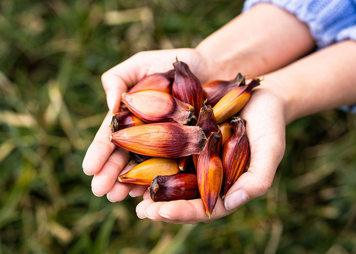
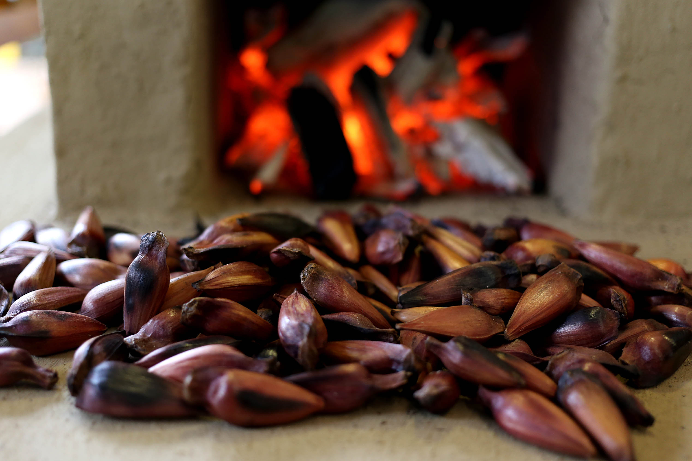
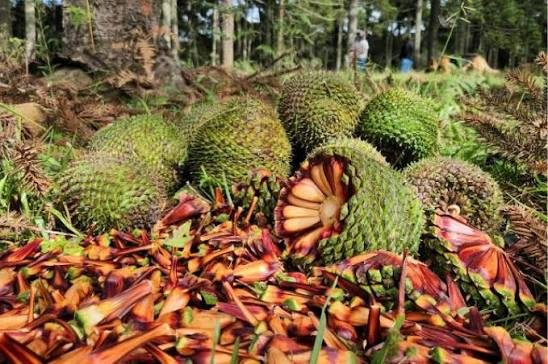

SEJAM BEM VINDOS AO MEU SITE!
conheça a origem dos pinhões

historia do pinhao
Qquando onde e como surgiram

importante para o patrimonio cultural do Brasil
sobre o tema

Curiosidades
Curiosidade:
Uma informação impotante